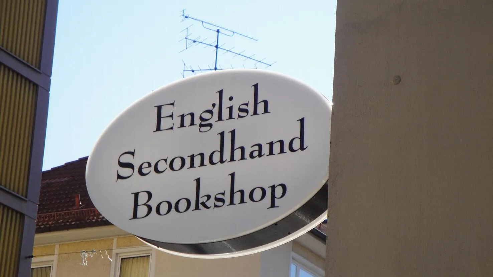

The Munich Readery, which proudly exists as the second-hand English bookstore in town. Not a second-hand English bookstore. The bookstore. Singular. Very confident for something surrounded by so many cafés trying to distract you.
Now, is it the best bookstore in existence? Honestly… unclear. There are probably philosophers debating this somewhere. But it is definitely one of the bookstores of all time, and that already feels like a win. You tell yourself you’ll "just browse." and two minutes later you are emotionally invested in a book you didn’t know existed and suddenly convinced you need to read more classic literature immediately (you will read 12 pages, fall asleep, and call it character development). It’s cozy, it’s slightly chaotic, and it quietly encourages the dangerous idea that buying more books somehow makes you happier. Which it does.
Back